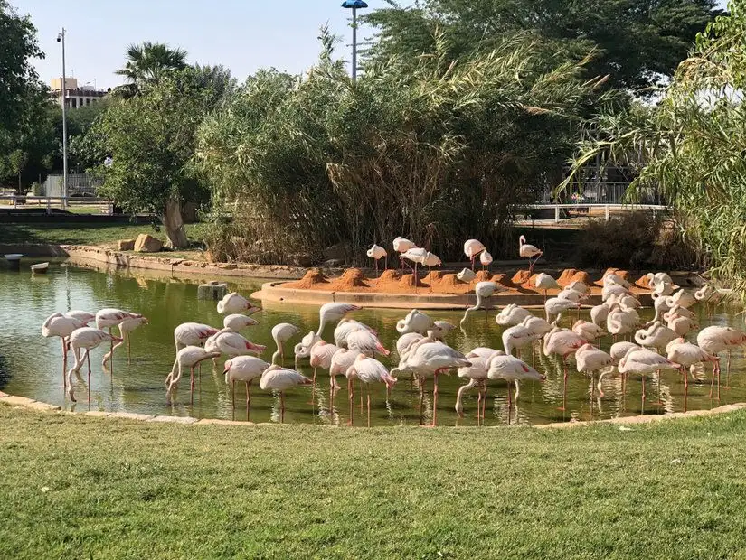

حديقة الحيوان في الرياض
تقع حديقة الحيوان في حي الملز في وسط مدينة الرياض في المملكة العربية السعودية، وتتمتع هذه الحديقة بمساحات شاسعة من المروج الخضراء، والأشجار والورود المختلفة. كما تضم العديد من الحيوانات الأليفة والمفترسة، الحيوانات البرية وغير البرية، والحيوانات البحرية والبرمائية، والكثير من الطيور والزواحف، حيث يوجد أكثر من 1200 حيوان مختلف في الحديقة. لذلك تُعد هذه الحديقة من الأماكن المناسبة لقضاء وقت ممتع في نزهة عائلية ماتعة، ومكانًا للسياحة في مدينة الرياض.
ساعات العمل: 10 صباحًا - 4 مساءً.
يتوفر في المكان أماكن للجلوس وتقديم الطعام، وننصح بزيارة الحديقة في فصل الشتاء. وننبه إلى أنه يُحظر إدخال المأكولات والمشروبات ويُسمح فقط بإدخال الماء.